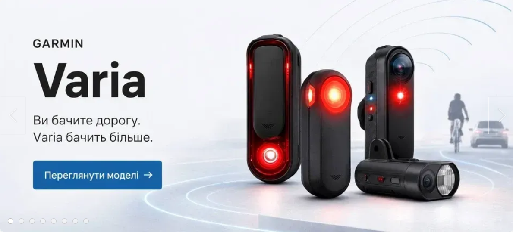
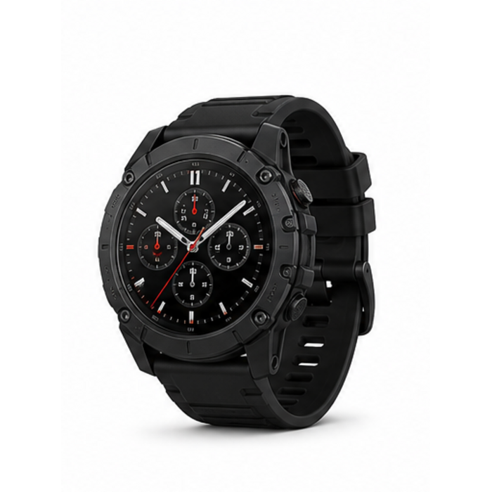
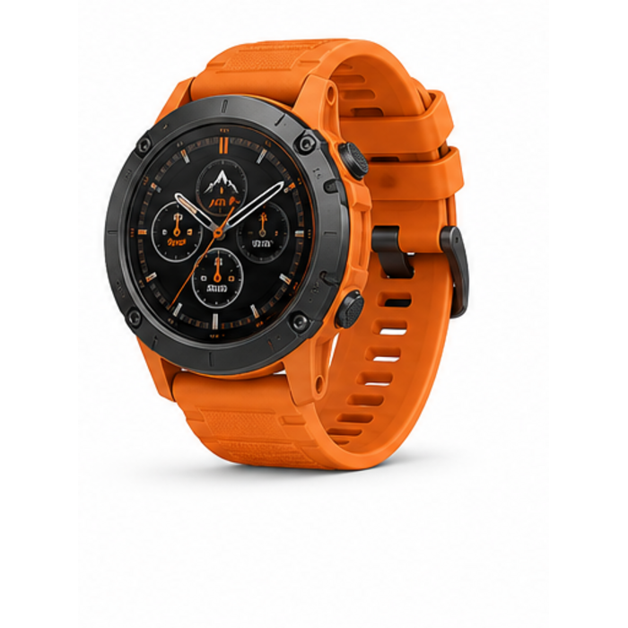
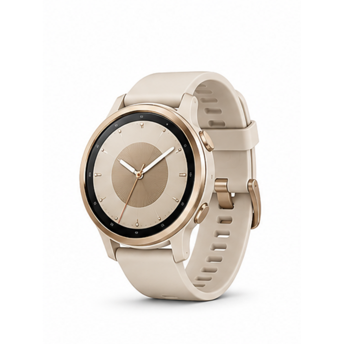
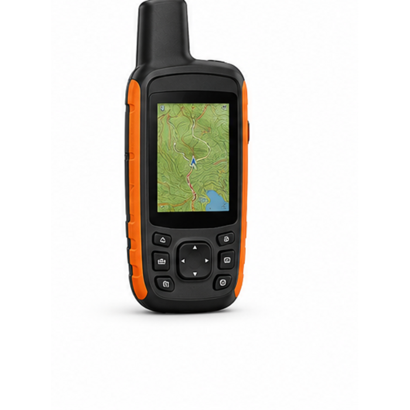
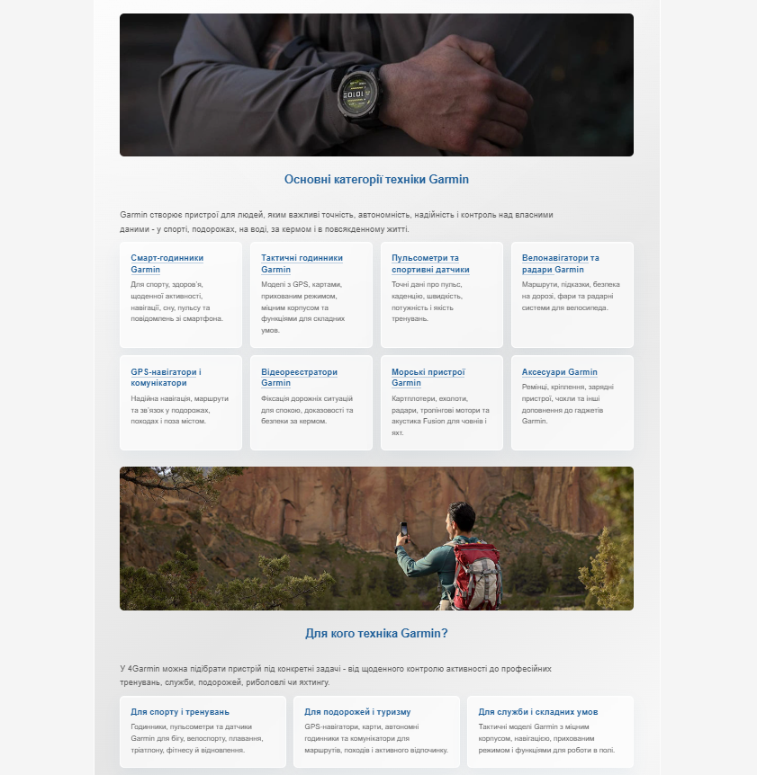
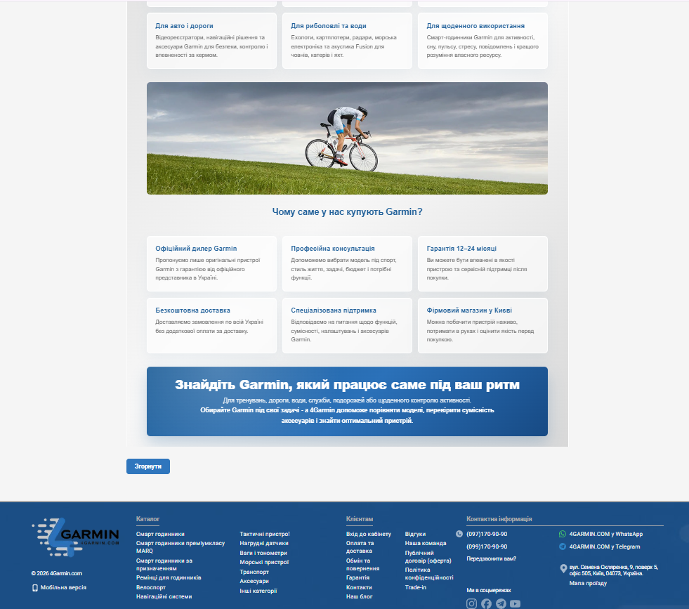

Популярні категорії
Нічого не знайдено. Garmin точний, але думки поки не читає 🙂
Чому нас вибирають




Найновіше в блозі
● ОФІЦІЙНИЙ ДИЛЕР GARMIN В УКРАЇНІ
4Garmin - інтернет-магазин техніки Garmin в Україні
4Garmin - спеціалізований інтернет-магазин Garmin, де можна купити оригінальні смарт-годинники, навігатори, велокомп’ютери, пульсометри, морські пристрої, відеореєстратори та аксесуари Garmin з офіційною гарантією.
Ми допомагаємо підібрати не просто гаджет, а пристрій під конкретний стиль життя: тренування, військові задачі, подорожі, автомобіль, яхтинг, риболовлю або щоденне використання.
Оригінальна техніка GarminЗ гарантією, консультацією та доставкоюЗ 2019 рокудопомагаємо клієнтам обирати Garmin12–24 місяціофіційної гарантії на пристрої0 грн доставкабезкоштовно по всій Україні

Основні категорії техніки Garmin
Garmin створює пристрої для людей, яким важливі точність, автономність, надійність і контроль над власними даними.
Для кого техніка Garmin?

Чому саме у нас купують Garmin?
Знайдіть Garmin, який працює саме під ваш ритм
Для тренувань, дороги, води, служби, подорожей або щоденного контролю активності.